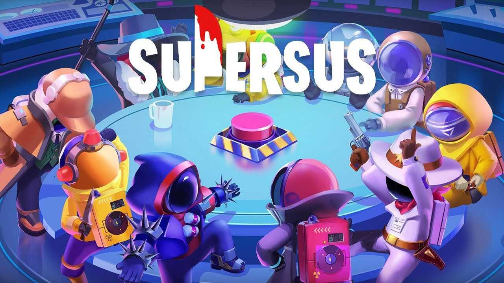

Super Sus 2025: 10 Fitur Baru yang Akan Membuat Permainanmu Lebih Seru!

Super Sus terus berkembang sebagai salah satu game sosial deduksi yang paling seru dimainkan, dan kini hadir dengan berbagai fitur baru dalam Super Sus 2025. Pembaruan terbaru ini bakal bikin gameplay semakin seru, menantang, dan pastinya lebih dinamis. Mulai dari pengenalan karakter-karakter baru, pembaruan di peta, hingga sistem matchmaking yang lebih baik, kali ini Super Sus benar-benar menghadirkan pengalaman bermain yang berbeda. Baca terus untuk tahu fitur-fitur terbaru yang wajib kamu coba!
1. Karakter Baru dan Peran Baru dalam Permainan
Pembaruan yang paling mencolok dalam Super Sus 2025 adalah hadirnya karakter-karakter baru dengan peran yang lebih beragam. Dalam versi sebelumnya, pemain terbatas pada beberapa peran klasik, seperti Impostor atau Crew Member. Tapi, sekarang kamu bisa memilih peran yang lebih spesial, seperti Detektif, Misi Rahasia, dan Pengkhianat Terampil. Setiap karakter baru ini datang dengan kemampuan unik yang memberikan peluang taktis baru dalam setiap permainan.
Keunggulan:
- Pilihan karakter lebih banyak, membuat permainan semakin menarik dan penuh variasi strategi.
- Karakter-karakter baru ini membawa kemampuan unik, jadi setiap pertandingan bisa jadi pengalaman yang sangat berbeda.
Kekurangan:
- Mungkin butuh waktu untuk mempelajari cara menggunakan karakter-karakter baru, terutama bagi pemain yang baru pertama kali mencobanya.
2. Pembaruan Map dan Lingkungan Bermain
Selain karakter baru, peta permainan juga mengalami pembaruan yang signifikan. Map yang sebelumnya sudah cukup seru kini mendapatkan tambahan elemen-elemen baru, seperti ruangan tersembunyi, area baru untuk bersembunyi, dan beberapa tempat baru yang bisa digunakan untuk menyelesaikan misi. Dengan lebih banyak pilihan ruang dan lokasi, pemain dapat berstrategi lebih matang dan menciptakan permainan yang lebih dinamis.
Keunggulan:
- Penambahan area baru membuat gameplay semakin bervariasi dan tak terduga.
- Pemain jadi memiliki lebih banyak opsi untuk menentukan langkah dan strategi selama permainan.
Kekurangan:
- Bagi pemain yang sudah sangat familiar dengan peta lama, penyesuaian terhadap perubahan baru mungkin memerlukan waktu.
3. Sistem Antrean dan Matchmaking yang Ditingkatkan
Fitur lain yang juga mendapat pembaruan besar adalah sistem antrean dan matchmaking. Kini, pencarian lawan jadi lebih cepat dan lebih cerdas. Sistem ini mengutamakan pencocokan pemain berdasarkan level keterampilan dan pengalaman mereka, yang membuat pertandingan jadi lebih seimbang. Tak hanya itu, sistem matchmaking yang baru juga memastikan kamu tidak akan bertemu dengan pemain yang terlalu jauh levelnya, jadi pertandingan pun jadi lebih seru.
Keunggulan:
- Antrean cepat mengurangi waktu tunggu, jadi kamu bisa langsung mulai bermain.
- Proses pencocokan pemain lebih adil dan seimbang, mengurangi kemungkinan pemain yang sangat kuat bertemu dengan pemain pemula.
Kekurangan:
- Meskipun sudah diperbaiki, masih ada kemungkinan untuk bertemu dengan pemain dari level yang berbeda, meskipun sistem sudah lebih pintar dalam mencocokkannya.
4. Peningkatan AI pada Mode Bot
Bagi kamu yang lebih suka bermain solo, AI bot kini mengalami peningkatan kualitas yang sangat signifikan. Dengan pembaruan ini, bot di dalam game akan lebih cerdas dan tidak mudah dikalahkan, memberikan kamu pengalaman berlatih yang lebih menantang. Mode ini sangat berguna bagi pemain yang ingin berlatih tanpa harus berhadapan dengan pemain lain, dan juga bagi mereka yang ingin meningkatkan keterampilan mereka sebelum bertanding secara online.
Keunggulan:
- Peningkatan AI membuat pengalaman bermain solo jadi lebih menantang dan seru.
- Memberikan latihan yang lebih efektif bagi pemain yang ingin meningkatkan kemampuan mereka.
Kekurangan:
- AI yang lebih pintar bisa menjadi tantangan berlebih, terutama untuk pemain yang masih pemula dan belum terbiasa dengan mekanisme permainan.
5. Sistem Peningkatan Karakter yang Lebih Dalam
Salah satu fitur besar yang ditambahkan dalam Super Sus 2025 adalah sistem peningkatan karakter. Kini, setiap karakter dalam game bisa ditingkatkan kemampuannya seiring berjalannya waktu. Dengan adanya sistem ini, pemain akan merasakan progres yang lebih nyata. Pemain dapat meningkatkan kecepatan, daya tahan, atau kemampuan serangan karakter mereka, sehingga memberikan keunggulan dalam setiap pertandingan. Ini memberi rasa kepuasan dan motivasi untuk terus bermain dan berkembang.
Keunggulan:
- Sistem peningkatan karakter memberikan elemen RPG yang lebih dalam dalam game.
- Pemain memiliki kontrol lebih besar terhadap perkembangan karakter mereka, serta merasakan peningkatan yang nyata dalam gameplay.
Kekurangan:
- Proses peningkatan karakter bisa terasa lambat, terutama jika kamu ingin langsung merasakan hasil upgrade dalam waktu singkat.
6. Sistem Clan dan Kompetisi yang Lebih Seru
Jika kamu suka tantangan kompetitif, kamu pasti akan suka dengan pembaruan fitur sistem clan dalam Super Sus 2025. Fitur ini memungkinkan kamu bergabung dengan teman-teman untuk membentuk clan, berkompetisi dengan clan lain, dan mendapatkan berbagai hadiah spesial seperti kosmetik eksklusif atau item langka. Clan memberikan dimensi sosial baru dalam game, mempererat kerjasama antara pemain, dan menciptakan atmosfer kompetisi yang lebih seru.
Keunggulan:
- Menambah dimensi sosial dalam permainan, memungkinkan kamu untuk bermain lebih seru bersama teman-teman.
- Kompetisi antar clan memberikan tantangan baru dan hadiah menarik bagi para pemenang.
Kekurangan:
- Membangun dan mengelola clan yang sukses membutuhkan waktu dan komitmen yang besar dari anggota clan.
7. Penyesuaian dan Pembaruan Fitur Kustomisasi
Selain kosmetik karakter, fitur kustomisasi di Super Sus 2025 kini lebih bervariasi. Pemain kini bisa menyesuaikan tampilan dan kemampuan karakter mereka lebih jauh, dengan berbagai pilihan seperti pakaian, aksesoris, dan ekspresi wajah. Semua pembaruan ini memungkinkan pemain untuk membuat karakter mereka semakin unik dan sesuai dengan keinginan pribadi.
Keunggulan:
- Pilihan kustomisasi yang lebih banyak memungkinkan kamu untuk menciptakan karakter yang benar-benar unik.
- Membuat karakter semakin personal dan ekspresif sesuai dengan selera kamu.
Kekurangan:
- Beberapa item kustomisasi hanya tersedia melalui pembelian dalam game atau event terbatas.
8. Pembaruan Keamanan dan Perbaikan Bug
Keamanan dan stabilitas permainan juga mendapat perhatian serius dalam Super Sus 2025. Dengan sejumlah pembaruan keamanan dan perbaikan bug, game ini jadi lebih stabil dan bebas gangguan teknis. Hal ini tentunya meningkatkan kenyamanan pemain, mengurangi gangguan yang terjadi selama pertandingan, serta menghindari kecurangan dengan memperketat sistem keamanan game.
Keunggulan:
- Pengalaman bermain yang lebih mulus dan bebas gangguan, tanpa masalah teknis yang mengganggu jalannya pertandingan.
- Meningkatkan integritas permainan dengan meminimalisir kemungkinan penggunaan cheat atau bot.
Kekurangan:
- Proses perbaikan bug besar kadang mempengaruhi performa game dalam beberapa waktu pertama setelah update.
9. Event Kolaborasi dan Cross-Promotion dengan Game Lain
Super Sus 2025 juga menghadirkan event kolaborasi dengan berbagai game populer lainnya. Kolaborasi ini memungkinkan pemain untuk mendapatkan item eksklusif atau skin bertema dari game lain yang tidak tersedia di event biasa. Pembaruan ini juga menambah keberagaman dalam konten permainan dan memberi kesempatan bagi pemain untuk mengoleksi item langka.
Keunggulan:
- Kolaborasi dengan game lain memberikan variasi dalam event-game yang diadakan.
- Memberikan penghargaan eksklusif bagi pemain yang berpartisipasi dalam event ini.
Kekurangan:
- Event-event ini hanya berlangsung dalam waktu terbatas, jadi pemain harus cepat berpartisipasi untuk mendapatkan item langka.
10. Komunitas dan Fitur Sosial yang Lebih Kuat
Terakhir, salah satu pembaruan penting dalam Super Sus 2025 adalah fitur sosial yang lebih kuat. Kini, ada lebih banyak ruang bagi pemain untuk berinteraksi dengan satu sama lain. Fitur seperti chat grup, forum dalam game, dan sistem pencapaian sosial memungkinkan pemain berbagi pengalaman dan berkolaborasi dengan teman-teman.
Keunggulan:
- Meningkatkan aspek sosial dalam permainan, membuat interaksi antar pemain jadi lebih menyenangkan.
- Mempermudah pemain untuk berbagi pengalaman dan berbicara dengan teman-teman di dalam game.
Kekurangan:
- Beberapa pemain mungkin lebih suka bermain solo dan merasa fitur sosial ini tidak terlalu relevan bagi mereka.
Kesimpulan: Pembaruan yang Menyegarkan Super Sus 2025
Secara keseluruhan, Super Sus 2025 membawa banyak pembaruan yang sangat positif bagi para penggemarnya. Dengan fitur-fitur baru seperti karakter dengan kemampuan unik, pembaruan peta yang lebih seru, dan sistem matchmaking yang lebih adil, game ini semakin seru dan menyenangkan untuk dimainkan. Tak hanya itu, adanya sistem clan, event kolaborasi, dan fitur sosial juga memperkaya interaksi antar pemain.
Meski ada beberapa kekurangan, seperti penyesuaian terhadap fitur baru dan beberapa item yang terbatas, keseluruhan pembaruan ini layak dicoba. Untuk kamu yang ingin mendapatkan item eksklusif dan lebih banyak keuntungan, kamu bisa melakukan Top Up Super Sus di Topupgim dan nikmati pengalaman bermain yang lebih seru.